Implicit plots¶
- sage.plot.plot3d.implicit_plot3d.implicit_plot3d(f, xrange, yrange, zrange, **kwds)[source]¶
Plot an isosurface of a function.
INPUT:
f– functionxrange– a 2-tuple (x_min, x_max) or a 3-tuple (x, x_min, x_max)yrange– a 2-tuple (y_min, y_max) or a 3-tuple (y, y_min, y_max)zrange– a 2-tuple (z_min, z_max) or a 3-tuple (z, z_min, z_max)plot_points– (default: “automatic”, which is 40) the number of function evaluations in each direction. (The number of cubes in the marching cubes algorithm will be one less than this). Can be a triple of integers, to specify a different resolution in each of x,y,z.contour– (default: 0) plot the isosurfacef(x,y,z) == contour. Can be a list, in which case multiple contours are plottedregion– (default:None) if region is given, it must be a Python callable. Only segments of the surface whereregion(x,y,z)returns a number \(>0\) will be included in the plot. (Note that returning a Python boolean is acceptable, sinceTrue == 1andFalse == 0).
EXAMPLES:
sage: var('x,y,z') (x, y, z)
>>> from sage.all import * >>> var('x,y,z') (x, y, z)
A simple sphere:
sage: implicit_plot3d(x^2+y^2+z^2==4, (x,-3,3), (y,-3,3), (z,-3,3)) Graphics3d Object
>>> from sage.all import * >>> implicit_plot3d(x**Integer(2)+y**Integer(2)+z**Integer(2)==Integer(4), (x,-Integer(3),Integer(3)), (y,-Integer(3),Integer(3)), (z,-Integer(3),Integer(3))) Graphics3d Object
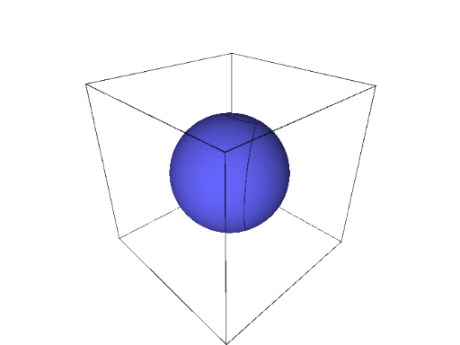
A nested set of spheres with a hole cut out:
sage: F = x^2 + y^2 + z^2 sage: P = implicit_plot3d(F, (x,-2,2), (y,-2,2), (z,-2,2), plot_points=60, ....: contour=[1,3,5], color='aquamarine', ....: region=lambda x,y,z: x<=0.2 or y>=0.2 or z<=0.2) sage: P.show(viewer='tachyon') # long time
>>> from sage.all import * >>> F = x**Integer(2) + y**Integer(2) + z**Integer(2) >>> P = implicit_plot3d(F, (x,-Integer(2),Integer(2)), (y,-Integer(2),Integer(2)), (z,-Integer(2),Integer(2)), plot_points=Integer(60), ... contour=[Integer(1),Integer(3),Integer(5)], color='aquamarine', ... region=lambda x,y,z: x<=RealNumber('0.2') or y>=RealNumber('0.2') or z<=RealNumber('0.2')) >>> P.show(viewer='tachyon') # long time
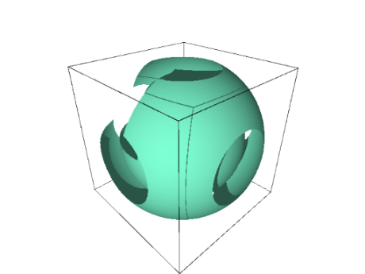
A very pretty example, attributed to Douglas Summers-Stay (archived page):
sage: T = RDF(golden_ratio) sage: F = 2 - (cos(x+T*y) + cos(x-T*y) + cos(y+T*z) ....: + cos(y-T*z) + cos(z-T*x) + cos(z+T*x)) sage: r = 4.77 sage: implicit_plot3d(F, (x,-r,r), (y,-r,r), (z,-r,r), ....: plot_points=40, color='darkkhaki').show(viewer='tachyon')
>>> from sage.all import * >>> T = RDF(golden_ratio) >>> F = Integer(2) - (cos(x+T*y) + cos(x-T*y) + cos(y+T*z) ... + cos(y-T*z) + cos(z-T*x) + cos(z+T*x)) >>> r = RealNumber('4.77') >>> implicit_plot3d(F, (x,-r,r), (y,-r,r), (z,-r,r), ... plot_points=Integer(40), color='darkkhaki').show(viewer='tachyon')
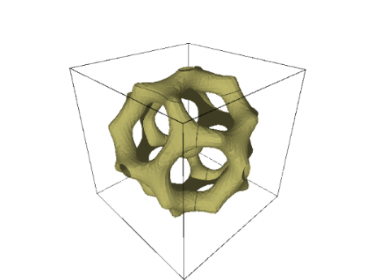
As I write this (but probably not as you read it), it’s almost Valentine’s day, so let’s try a heart (from http://mathworld.wolfram.com/HeartSurface.html)
sage: F = (x^2+9/4*y^2+z^2-1)^3 - x^2*z^3 - 9/(80)*y^2*z^3 sage: r = 1.5 sage: V = implicit_plot3d(F, (x,-r,r), (y,-r,r), (z,-r,r), ....: plot_points=80, color='red', smooth=False) sage: V.show(viewer='tachyon') # long time
>>> from sage.all import * >>> F = (x**Integer(2)+Integer(9)/Integer(4)*y**Integer(2)+z**Integer(2)-Integer(1))**Integer(3) - x**Integer(2)*z**Integer(3) - Integer(9)/(Integer(80))*y**Integer(2)*z**Integer(3) >>> r = RealNumber('1.5') >>> V = implicit_plot3d(F, (x,-r,r), (y,-r,r), (z,-r,r), ... plot_points=Integer(80), color='red', smooth=False) >>> V.show(viewer='tachyon') # long time
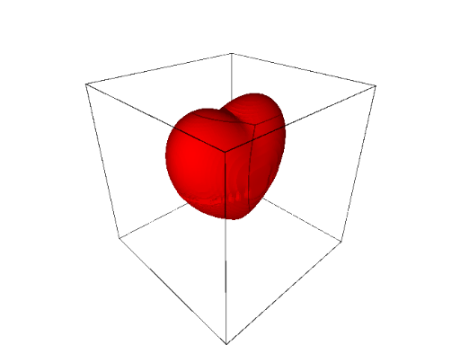
The same examples also work with the default Jmol viewer; for example:
sage: T = RDF(golden_ratio) sage: F = 2 - (cos(x + T*y) + cos(x - T*y) + cos(y + T*z) ....: + cos(y - T*z) + cos(z - T*x) + cos(z + T*x)) sage: r = 4.77 sage: implicit_plot3d(F, (x,-r,r), (y,-r,r), (z,-r,r), ....: plot_points=40, color='deepskyblue').show()
>>> from sage.all import * >>> T = RDF(golden_ratio) >>> F = Integer(2) - (cos(x + T*y) + cos(x - T*y) + cos(y + T*z) ... + cos(y - T*z) + cos(z - T*x) + cos(z + T*x)) >>> r = RealNumber('4.77') >>> implicit_plot3d(F, (x,-r,r), (y,-r,r), (z,-r,r), ... plot_points=Integer(40), color='deepskyblue').show()
Here we use
smooth=Truewith a Tachyon graph:sage: implicit_plot3d(x^2 + y^2 + z^2, (x,-2,2), (y,-2,2), (z,-2,2), ....: contour=4, color='deepskyblue', smooth=True) Graphics3d Object
>>> from sage.all import * >>> implicit_plot3d(x**Integer(2) + y**Integer(2) + z**Integer(2), (x,-Integer(2),Integer(2)), (y,-Integer(2),Integer(2)), (z,-Integer(2),Integer(2)), ... contour=Integer(4), color='deepskyblue', smooth=True) Graphics3d Object
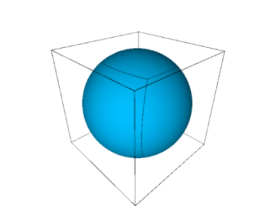
We explicitly specify a gradient function (in conjunction with
smooth=True) and invert the normals:sage: gx = lambda x, y, z: -(2*x + y^2 + z^2) sage: gy = lambda x, y, z: -(x^2 + 2*y + z^2) sage: gz = lambda x, y, z: -(x^2 + y^2 + 2*z) sage: implicit_plot3d(x^2+y^2+z^2, (x,-2,2), (y,-2,2), (z,-2,2), ....: contour=4, plot_points=40, smooth=True, ....: gradient=(gx, gy, gz)).show(viewer='tachyon')
>>> from sage.all import * >>> gx = lambda x, y, z: -(Integer(2)*x + y**Integer(2) + z**Integer(2)) >>> gy = lambda x, y, z: -(x**Integer(2) + Integer(2)*y + z**Integer(2)) >>> gz = lambda x, y, z: -(x**Integer(2) + y**Integer(2) + Integer(2)*z) >>> implicit_plot3d(x**Integer(2)+y**Integer(2)+z**Integer(2), (x,-Integer(2),Integer(2)), (y,-Integer(2),Integer(2)), (z,-Integer(2),Integer(2)), ... contour=Integer(4), plot_points=Integer(40), smooth=True, ... gradient=(gx, gy, gz)).show(viewer='tachyon')
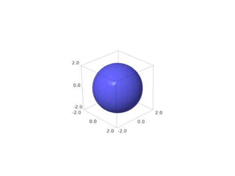
A graph of two metaballs interacting with each other:
sage: def metaball(x0, y0, z0): ....: return 1 / ((x-x0)^2+(y-y0)^2+(z-z0)^2) sage: implicit_plot3d(metaball(-0.6,0,0) + metaball(0.6,0,0), ....: (x,-2,2), (y,-2,2), (z,-2,2), ....: plot_points=60, contour=2, color='seagreen') Graphics3d Object
>>> from sage.all import * >>> def metaball(x0, y0, z0): ... return Integer(1) / ((x-x0)**Integer(2)+(y-y0)**Integer(2)+(z-z0)**Integer(2)) >>> implicit_plot3d(metaball(-RealNumber('0.6'),Integer(0),Integer(0)) + metaball(RealNumber('0.6'),Integer(0),Integer(0)), ... (x,-Integer(2),Integer(2)), (y,-Integer(2),Integer(2)), (z,-Integer(2),Integer(2)), ... plot_points=Integer(60), contour=Integer(2), color='seagreen') Graphics3d Object
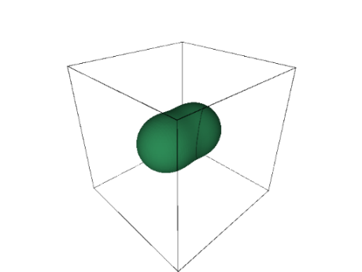
One can also color the surface using a coloring function and a colormap as follows. Note that the coloring function must take values in the interval \([0,1]\).
sage: t = (sin(3*z)**2).function(x,y,z) sage: cm = colormaps.gist_rainbow sage: G = implicit_plot3d(x^2 + y^2 + z^2, (x,-2,2), (y,-2,2), (z,-2, 2), ....: contour=4, color=(t,cm), plot_points=100) sage: G.show(viewer='tachyon') # long time
>>> from sage.all import * >>> t = (sin(Integer(3)*z)**Integer(2)).function(x,y,z) >>> cm = colormaps.gist_rainbow >>> G = implicit_plot3d(x**Integer(2) + y**Integer(2) + z**Integer(2), (x,-Integer(2),Integer(2)), (y,-Integer(2),Integer(2)), (z,-Integer(2), Integer(2)), ... contour=Integer(4), color=(t,cm), plot_points=Integer(100)) >>> G.show(viewer='tachyon') # long time
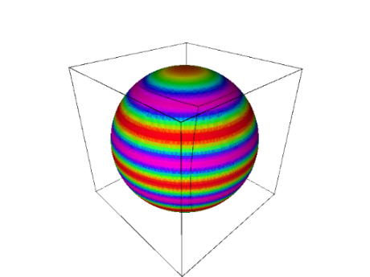
Here is another colored example:
sage: x, y, z = var('x,y,z') sage: t = (x).function(x,y,z) sage: cm = colormaps.PiYG sage: G = implicit_plot3d(x^4 + y^2 + z^2, (x,-2,2), (y,-2,2),(z,-2,2), ....: contour=4, color=(t,cm), plot_points=40) sage: G Graphics3d Object
>>> from sage.all import * >>> x, y, z = var('x,y,z') >>> t = (x).function(x,y,z) >>> cm = colormaps.PiYG >>> G = implicit_plot3d(x**Integer(4) + y**Integer(2) + z**Integer(2), (x,-Integer(2),Integer(2)), (y,-Integer(2),Integer(2)),(z,-Integer(2),Integer(2)), ... contour=Integer(4), color=(t,cm), plot_points=Integer(40)) >>> G Graphics3d Object
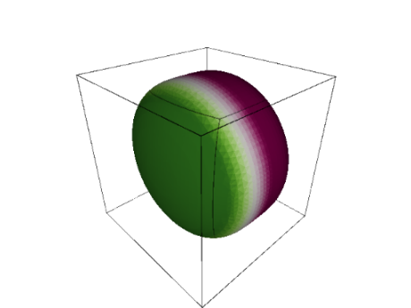
MANY MORE EXAMPLES:
A kind of saddle:
sage: implicit_plot3d(x^3 + y^2 - z^2, (x,-2,2), (y,-2,2), (z,-2,2), ....: plot_points=60, contour=0, color='lightcoral') Graphics3d Object
>>> from sage.all import * >>> implicit_plot3d(x**Integer(3) + y**Integer(2) - z**Integer(2), (x,-Integer(2),Integer(2)), (y,-Integer(2),Integer(2)), (z,-Integer(2),Integer(2)), ... plot_points=Integer(60), contour=Integer(0), color='lightcoral') Graphics3d Object
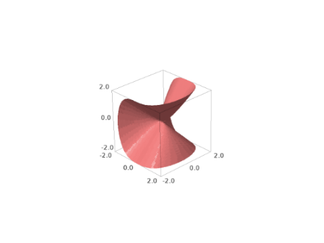
A smooth surface with six radial openings:
sage: implicit_plot3d(-(cos(x) + cos(y) + cos(z)), ....: (x,-4,4), (y,-4,4), (z,-4,4), color='orchid') Graphics3d Object
>>> from sage.all import * >>> implicit_plot3d(-(cos(x) + cos(y) + cos(z)), ... (x,-Integer(4),Integer(4)), (y,-Integer(4),Integer(4)), (z,-Integer(4),Integer(4)), color='orchid') Graphics3d Object
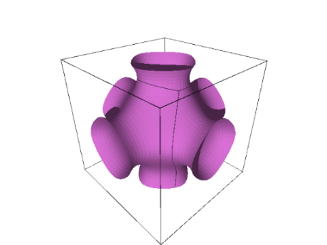
A cube composed of eight conjoined blobs:
sage: F = x^2 + y^2 + z^2 + cos(4*x) + cos(4*y) + cos(4*z) - 0.2 sage: implicit_plot3d(F, (x,-2,2), (y,-2,2), (z,-2,2), color='mediumspringgreen') Graphics3d Object
>>> from sage.all import * >>> F = x**Integer(2) + y**Integer(2) + z**Integer(2) + cos(Integer(4)*x) + cos(Integer(4)*y) + cos(Integer(4)*z) - RealNumber('0.2') >>> implicit_plot3d(F, (x,-Integer(2),Integer(2)), (y,-Integer(2),Integer(2)), (z,-Integer(2),Integer(2)), color='mediumspringgreen') Graphics3d Object
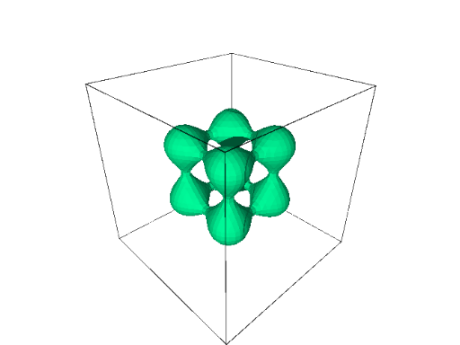
A variation of the blob cube featuring heterogeneously sized blobs:
sage: F = x^2 + y^2 + z^2 + sin(4*x) + sin(4*y) + sin(4*z) - 1 sage: implicit_plot3d(F, (x,-2,2), (y,-2,2), (z,-2,2), color='lavenderblush') Graphics3d Object
>>> from sage.all import * >>> F = x**Integer(2) + y**Integer(2) + z**Integer(2) + sin(Integer(4)*x) + sin(Integer(4)*y) + sin(Integer(4)*z) - Integer(1) >>> implicit_plot3d(F, (x,-Integer(2),Integer(2)), (y,-Integer(2),Integer(2)), (z,-Integer(2),Integer(2)), color='lavenderblush') Graphics3d Object
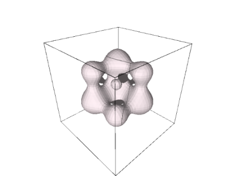
A Klein bottle:
sage: G = x^2 + y^2 + z^2 sage: F = (G+2*y-1)*((G-2*y-1)^2-8*z^2) + 16*x*z*(G-2*y-1) sage: implicit_plot3d(F, (x,-3,3), (y,-3.1,3.1), (z,-4,4), color='moccasin') Graphics3d Object
>>> from sage.all import * >>> G = x**Integer(2) + y**Integer(2) + z**Integer(2) >>> F = (G+Integer(2)*y-Integer(1))*((G-Integer(2)*y-Integer(1))**Integer(2)-Integer(8)*z**Integer(2)) + Integer(16)*x*z*(G-Integer(2)*y-Integer(1)) >>> implicit_plot3d(F, (x,-Integer(3),Integer(3)), (y,-RealNumber('3.1'),RealNumber('3.1')), (z,-Integer(4),Integer(4)), color='moccasin') Graphics3d Object
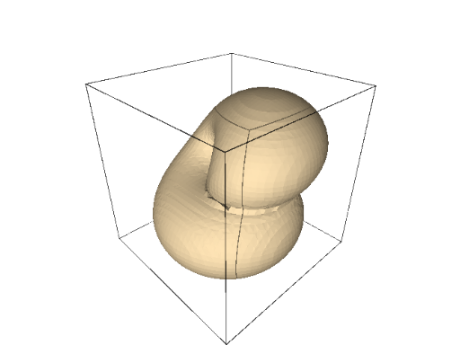
A lemniscate:
sage: F = 4*x^2*(x^2+y^2+z^2+z) + y^2*(y^2+z^2-1) sage: implicit_plot3d(F, (x,-0.5,0.5), (y,-1,1), (z,-1,1), color='deeppink') Graphics3d Object
>>> from sage.all import * >>> F = Integer(4)*x**Integer(2)*(x**Integer(2)+y**Integer(2)+z**Integer(2)+z) + y**Integer(2)*(y**Integer(2)+z**Integer(2)-Integer(1)) >>> implicit_plot3d(F, (x,-RealNumber('0.5'),RealNumber('0.5')), (y,-Integer(1),Integer(1)), (z,-Integer(1),Integer(1)), color='deeppink') Graphics3d Object
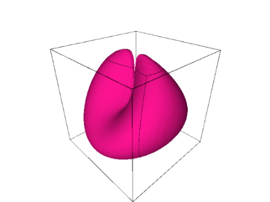
Drope:
sage: implicit_plot3d(z - 4*x*exp(-x^2-y^2), (x,-2,2), (y,-2,2), (z,-1.7,1.7), ....: color='darkcyan') Graphics3d Object
>>> from sage.all import * >>> implicit_plot3d(z - Integer(4)*x*exp(-x**Integer(2)-y**Integer(2)), (x,-Integer(2),Integer(2)), (y,-Integer(2),Integer(2)), (z,-RealNumber('1.7'),RealNumber('1.7')), ... color='darkcyan') Graphics3d Object
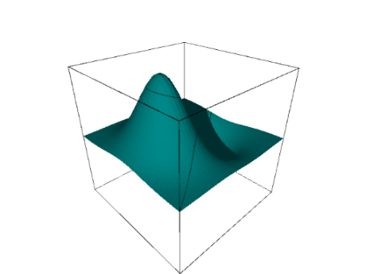
A cube with a circular aperture on each face:
sage: F = ((1/2.3)^2 * (x^2 + y^2 + z^2))^(-6) + ((1/2)^8 * (x^8 + y^8 + z^8))^6 - 1 sage: implicit_plot3d(F, (x,-2,2), (y,-2,2), (z,-2,2), color='palevioletred') Graphics3d Object
>>> from sage.all import * >>> F = ((Integer(1)/RealNumber('2.3'))**Integer(2) * (x**Integer(2) + y**Integer(2) + z**Integer(2)))**(-Integer(6)) + ((Integer(1)/Integer(2))**Integer(8) * (x**Integer(8) + y**Integer(8) + z**Integer(8)))**Integer(6) - Integer(1) >>> implicit_plot3d(F, (x,-Integer(2),Integer(2)), (y,-Integer(2),Integer(2)), (z,-Integer(2),Integer(2)), color='palevioletred') Graphics3d Object
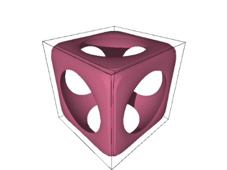
A simple hyperbolic surface:
sage: implicit_plot3d(x^2 + y - z^2, (x,-1,1), (y,-1,1), (z,-1,1), ....: color='darkslategray') Graphics3d Object
>>> from sage.all import * >>> implicit_plot3d(x**Integer(2) + y - z**Integer(2), (x,-Integer(1),Integer(1)), (y,-Integer(1),Integer(1)), (z,-Integer(1),Integer(1)), ... color='darkslategray') Graphics3d Object
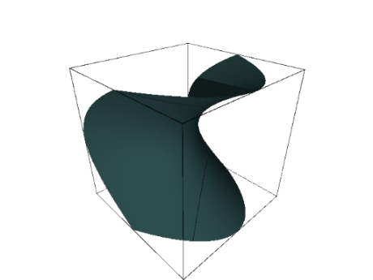
A hyperboloid:
sage: implicit_plot3d(x^2 + y^2 - z^2 -0.3, (x,-2,2), (y,-2,2), (z,-1.8,1.8), ....: color='honeydew') Graphics3d Object
>>> from sage.all import * >>> implicit_plot3d(x**Integer(2) + y**Integer(2) - z**Integer(2) -RealNumber('0.3'), (x,-Integer(2),Integer(2)), (y,-Integer(2),Integer(2)), (z,-RealNumber('1.8'),RealNumber('1.8')), ... color='honeydew') Graphics3d Object
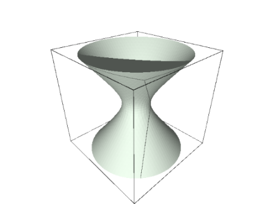
Dupin cyclide (Wikipedia article Dupin_cyclide)
sage: x, y, z, a, b, c, d = var('x,y,z,a,b,c,d') sage: a = 3.5 sage: b = 3 sage: c = sqrt(a^2 - b^2) sage: d = 2 sage: F = (x^2 + y^2 + z^2 + b^2 - d^2)^2 - 4*(a*x-c*d)^2 - 4*b^2*y^2 sage: implicit_plot3d(F, (x,-6,6), (y,-6,6), (z,-6,6), color='seashell') Graphics3d Object
>>> from sage.all import * >>> x, y, z, a, b, c, d = var('x,y,z,a,b,c,d') >>> a = RealNumber('3.5') >>> b = Integer(3) >>> c = sqrt(a**Integer(2) - b**Integer(2)) >>> d = Integer(2) >>> F = (x**Integer(2) + y**Integer(2) + z**Integer(2) + b**Integer(2) - d**Integer(2))**Integer(2) - Integer(4)*(a*x-c*d)**Integer(2) - Integer(4)*b**Integer(2)*y**Integer(2) >>> implicit_plot3d(F, (x,-Integer(6),Integer(6)), (y,-Integer(6),Integer(6)), (z,-Integer(6),Integer(6)), color='seashell') Graphics3d Object
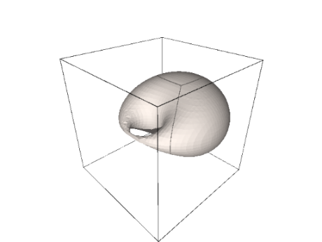
Sinus:
sage: implicit_plot3d(sin(pi*((x)^2+(y)^2))/2 + z, (x,-1,1), (y,-1,1), (z,-1,1), ....: color='rosybrown') Graphics3d Object
>>> from sage.all import * >>> implicit_plot3d(sin(pi*((x)**Integer(2)+(y)**Integer(2)))/Integer(2) + z, (x,-Integer(1),Integer(1)), (y,-Integer(1),Integer(1)), (z,-Integer(1),Integer(1)), ... color='rosybrown') Graphics3d Object
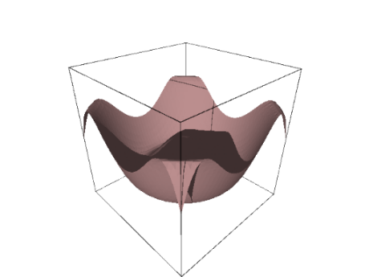
A torus:
sage: implicit_plot3d((sqrt(x*x+y*y)-3)^2 + z*z - 1, (x,-4,4), (y,-4,4), (z,-1,1), ....: color='indigo') Graphics3d Object
>>> from sage.all import * >>> implicit_plot3d((sqrt(x*x+y*y)-Integer(3))**Integer(2) + z*z - Integer(1), (x,-Integer(4),Integer(4)), (y,-Integer(4),Integer(4)), (z,-Integer(1),Integer(1)), ... color='indigo') Graphics3d Object
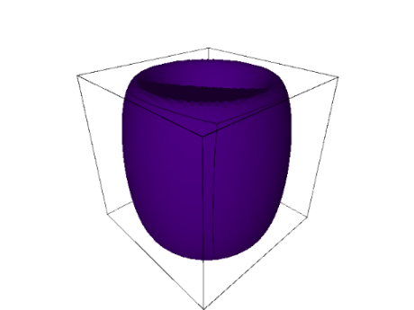
An octahedron:
sage: implicit_plot3d(abs(x) + abs(y) + abs(z) - 1, (x,-1,1), (y,-1,1), (z,-1,1), ....: color='olive') Graphics3d Object
>>> from sage.all import * >>> implicit_plot3d(abs(x) + abs(y) + abs(z) - Integer(1), (x,-Integer(1),Integer(1)), (y,-Integer(1),Integer(1)), (z,-Integer(1),Integer(1)), ... color='olive') Graphics3d Object
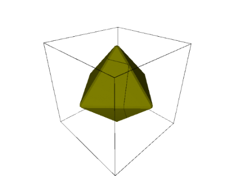
A cube:
sage: implicit_plot3d(x^100 + y^100 + z^100 - 1, (x,-2,2), (y,-2,2), (z,-2,2), ....: color='lightseagreen') Graphics3d Object
>>> from sage.all import * >>> implicit_plot3d(x**Integer(100) + y**Integer(100) + z**Integer(100) - Integer(1), (x,-Integer(2),Integer(2)), (y,-Integer(2),Integer(2)), (z,-Integer(2),Integer(2)), ... color='lightseagreen') Graphics3d Object
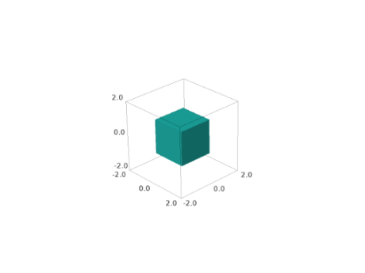
Toupie:
sage: implicit_plot3d((sqrt(x*x+y*y)-3)^3 + z*z - 1, (x,-4,4), (y,-4,4), (z,-6,6), ....: color='mintcream') Graphics3d Object
>>> from sage.all import * >>> implicit_plot3d((sqrt(x*x+y*y)-Integer(3))**Integer(3) + z*z - Integer(1), (x,-Integer(4),Integer(4)), (y,-Integer(4),Integer(4)), (z,-Integer(6),Integer(6)), ... color='mintcream') Graphics3d Object
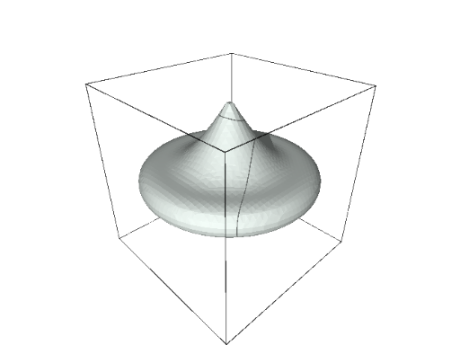
A cube with rounded edges:
sage: F = x^4 + y^4 + z^4 - (x^2 + y^2 + z^2) sage: implicit_plot3d(F, (x,-2,2), (y,-2,2), (z,-2,2), color='mediumvioletred') Graphics3d Object
>>> from sage.all import * >>> F = x**Integer(4) + y**Integer(4) + z**Integer(4) - (x**Integer(2) + y**Integer(2) + z**Integer(2)) >>> implicit_plot3d(F, (x,-Integer(2),Integer(2)), (y,-Integer(2),Integer(2)), (z,-Integer(2),Integer(2)), color='mediumvioletred') Graphics3d Object
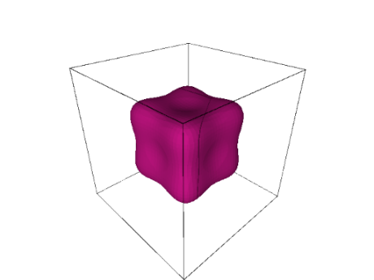
Chmutov:
sage: F = x^4 + y^4 + z^4 - (x^2 + y^2 + z^2 - 0.3) sage: implicit_plot3d(F, (x,-1.5,1.5), (y,-1.5,1.5), (z,-1.5,1.5), ....: color='lightskyblue') Graphics3d Object
>>> from sage.all import * >>> F = x**Integer(4) + y**Integer(4) + z**Integer(4) - (x**Integer(2) + y**Integer(2) + z**Integer(2) - RealNumber('0.3')) >>> implicit_plot3d(F, (x,-RealNumber('1.5'),RealNumber('1.5')), (y,-RealNumber('1.5'),RealNumber('1.5')), (z,-RealNumber('1.5'),RealNumber('1.5')), ... color='lightskyblue') Graphics3d Object
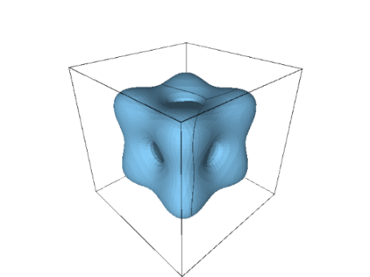
Further Chmutov:
sage: F = 2*(x^2*(3-4*x^2)^2+y^2*(3-4*y^2)^2+z^2*(3-4*z^2)^2) - 3 sage: implicit_plot3d(F, (x,-1.3,1.3), (y,-1.3,1.3), (z,-1.3,1.3), ....: color='darksalmon') Graphics3d Object
>>> from sage.all import * >>> F = Integer(2)*(x**Integer(2)*(Integer(3)-Integer(4)*x**Integer(2))**Integer(2)+y**Integer(2)*(Integer(3)-Integer(4)*y**Integer(2))**Integer(2)+z**Integer(2)*(Integer(3)-Integer(4)*z**Integer(2))**Integer(2)) - Integer(3) >>> implicit_plot3d(F, (x,-RealNumber('1.3'),RealNumber('1.3')), (y,-RealNumber('1.3'),RealNumber('1.3')), (z,-RealNumber('1.3'),RealNumber('1.3')), ... color='darksalmon') Graphics3d Object
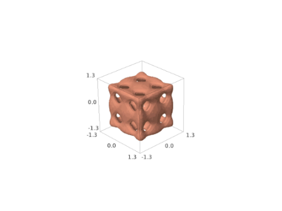
Clebsch surface:
sage: F_1 = 81 * (x^3+y^3+z^3) sage: F_2 = 189 * (x^2*(y+z)+y^2*(x+z)+z^2*(x+y)) sage: F_3 = 54 * x * y * z sage: F_4 = 126 * (x*y+x*z+y*z) sage: F_5 = 9 * (x^2+y^2+z^2) sage: F_6 = 9 * (x+y+z) sage: F = F_1 - F_2 + F_3 + F_4 - F_5 + F_6 + 1 sage: implicit_plot3d(F, (x,-1,1), (y,-1,1), (z,-1,1), color='yellowgreen') Graphics3d Object
>>> from sage.all import * >>> F_1 = Integer(81) * (x**Integer(3)+y**Integer(3)+z**Integer(3)) >>> F_2 = Integer(189) * (x**Integer(2)*(y+z)+y**Integer(2)*(x+z)+z**Integer(2)*(x+y)) >>> F_3 = Integer(54) * x * y * z >>> F_4 = Integer(126) * (x*y+x*z+y*z) >>> F_5 = Integer(9) * (x**Integer(2)+y**Integer(2)+z**Integer(2)) >>> F_6 = Integer(9) * (x+y+z) >>> F = F_1 - F_2 + F_3 + F_4 - F_5 + F_6 + Integer(1) >>> implicit_plot3d(F, (x,-Integer(1),Integer(1)), (y,-Integer(1),Integer(1)), (z,-Integer(1),Integer(1)), color='yellowgreen') Graphics3d Object
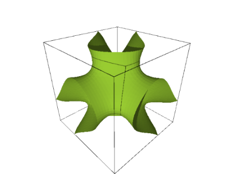
Looks like a water droplet:
sage: implicit_plot3d(x^2 + y^2 - (1-z)*z^2, (x,-1.5,1.5), (y,-1.5,1.5), (z,-1,1), ....: color='bisque') Graphics3d Object
>>> from sage.all import * >>> implicit_plot3d(x**Integer(2) + y**Integer(2) - (Integer(1)-z)*z**Integer(2), (x,-RealNumber('1.5'),RealNumber('1.5')), (y,-RealNumber('1.5'),RealNumber('1.5')), (z,-Integer(1),Integer(1)), ... color='bisque') Graphics3d Object
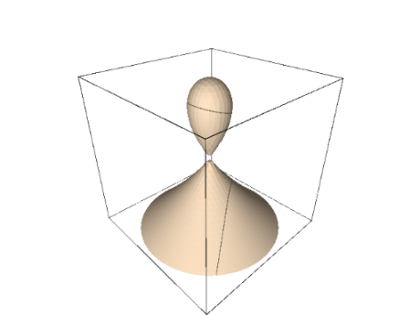
Sphere in a cage:
sage: F = (x^8+z^30+y^8-(x^4 + z^50 + y^4 -0.3)) * (x^2+y^2+z^2-0.5) sage: implicit_plot3d(F, (x,-1.2,1.2), (y,-1.3,1.3), (z,-1.5,1.5), ....: color='firebrick') Graphics3d Object
>>> from sage.all import * >>> F = (x**Integer(8)+z**Integer(30)+y**Integer(8)-(x**Integer(4) + z**Integer(50) + y**Integer(4) -RealNumber('0.3'))) * (x**Integer(2)+y**Integer(2)+z**Integer(2)-RealNumber('0.5')) >>> implicit_plot3d(F, (x,-RealNumber('1.2'),RealNumber('1.2')), (y,-RealNumber('1.3'),RealNumber('1.3')), (z,-RealNumber('1.5'),RealNumber('1.5')), ... color='firebrick') Graphics3d Object
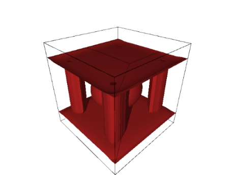
Ortho circle:
sage: F = (((x^2+y^2-1)^2+z^2) * ((y^2+z^2-1)^2+x^2) * ((z^2+x^2-1)^2+y^2) ....: - 0.075^2 * (1+3*(x^2+y^2+z^2))) sage: implicit_plot3d(F, (x,-1.5,1.5), (y,-1.5,1.5), (z,-1.5,1.5), ....: color='lemonchiffon') Graphics3d Object
>>> from sage.all import * >>> F = (((x**Integer(2)+y**Integer(2)-Integer(1))**Integer(2)+z**Integer(2)) * ((y**Integer(2)+z**Integer(2)-Integer(1))**Integer(2)+x**Integer(2)) * ((z**Integer(2)+x**Integer(2)-Integer(1))**Integer(2)+y**Integer(2)) ... - RealNumber('0.075')**Integer(2) * (Integer(1)+Integer(3)*(x**Integer(2)+y**Integer(2)+z**Integer(2)))) >>> implicit_plot3d(F, (x,-RealNumber('1.5'),RealNumber('1.5')), (y,-RealNumber('1.5'),RealNumber('1.5')), (z,-RealNumber('1.5'),RealNumber('1.5')), ... color='lemonchiffon') Graphics3d Object
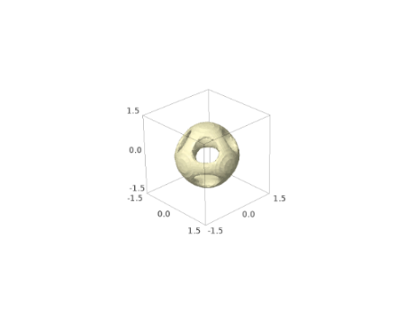
Cube sphere:
sage: F = 12 - ((1/2.3)^2 *(x^2 + y^2 + z^2))^-6 - ((1/2)^8 * (x^8 + y^8 + z^8))^6 sage: implicit_plot3d(F, (x,-2,2), (y,-2,2), (z,-2,2), color='rosybrown') Graphics3d Object
>>> from sage.all import * >>> F = Integer(12) - ((Integer(1)/RealNumber('2.3'))**Integer(2) *(x**Integer(2) + y**Integer(2) + z**Integer(2)))**-Integer(6) - ((Integer(1)/Integer(2))**Integer(8) * (x**Integer(8) + y**Integer(8) + z**Integer(8)))**Integer(6) >>> implicit_plot3d(F, (x,-Integer(2),Integer(2)), (y,-Integer(2),Integer(2)), (z,-Integer(2),Integer(2)), color='rosybrown') Graphics3d Object
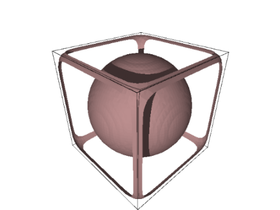
Two cylinders intersect to make a cross:
sage: implicit_plot3d((x^2+y^2-1) * (x^2+z^2-1) - 1, (x,-3,3), (y,-3,3), (z,-3,3), ....: color='burlywood') Graphics3d Object
>>> from sage.all import * >>> implicit_plot3d((x**Integer(2)+y**Integer(2)-Integer(1)) * (x**Integer(2)+z**Integer(2)-Integer(1)) - Integer(1), (x,-Integer(3),Integer(3)), (y,-Integer(3),Integer(3)), (z,-Integer(3),Integer(3)), ... color='burlywood') Graphics3d Object
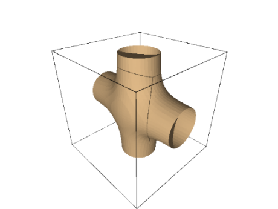
Three cylinders intersect in a similar fashion:
sage: implicit_plot3d((x^2+y^2-1) * (x^2+z^2-1) * (y^2+z^2-1) - 1, ....: (x,-3,3), (y,-3,3), (z,-3,3), color='aqua') Graphics3d Object
>>> from sage.all import * >>> implicit_plot3d((x**Integer(2)+y**Integer(2)-Integer(1)) * (x**Integer(2)+z**Integer(2)-Integer(1)) * (y**Integer(2)+z**Integer(2)-Integer(1)) - Integer(1), ... (x,-Integer(3),Integer(3)), (y,-Integer(3),Integer(3)), (z,-Integer(3),Integer(3)), color='aqua') Graphics3d Object
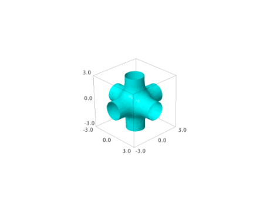
A sphere-ish object with twelve holes, four on each XYZ plane:
sage: implicit_plot3d(3*(cos(x)+cos(y)+cos(z)) + 4*cos(x)*cos(y)*cos(z), ....: (x,-3,3), (y,-3,3), (z,-3,3), color='orangered') Graphics3d Object
>>> from sage.all import * >>> implicit_plot3d(Integer(3)*(cos(x)+cos(y)+cos(z)) + Integer(4)*cos(x)*cos(y)*cos(z), ... (x,-Integer(3),Integer(3)), (y,-Integer(3),Integer(3)), (z,-Integer(3),Integer(3)), color='orangered') Graphics3d Object
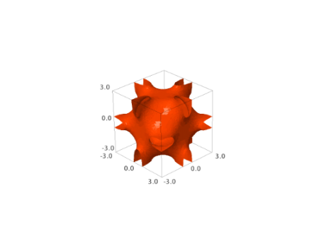
A gyroid:
sage: implicit_plot3d(cos(x)*sin(y) + cos(y)*sin(z) + cos(z)*sin(x), ....: (x,-4,4), (y,-4,4), (z,-4,4), color='sandybrown') Graphics3d Object
>>> from sage.all import * >>> implicit_plot3d(cos(x)*sin(y) + cos(y)*sin(z) + cos(z)*sin(x), ... (x,-Integer(4),Integer(4)), (y,-Integer(4),Integer(4)), (z,-Integer(4),Integer(4)), color='sandybrown') Graphics3d Object
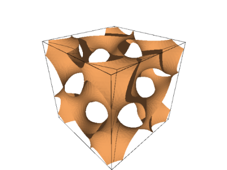
Tetrahedra:
sage: implicit_plot3d((x^2+y^2+z^2)^2 + 8*x*y*z - 10*(x^2+y^2+z^2) + 25, ....: (x,-4,4), (y,-4,4), (z,-4,4), color='plum') Graphics3d Object
>>> from sage.all import * >>> implicit_plot3d((x**Integer(2)+y**Integer(2)+z**Integer(2))**Integer(2) + Integer(8)*x*y*z - Integer(10)*(x**Integer(2)+y**Integer(2)+z**Integer(2)) + Integer(25), ... (x,-Integer(4),Integer(4)), (y,-Integer(4),Integer(4)), (z,-Integer(4),Integer(4)), color='plum') Graphics3d Object
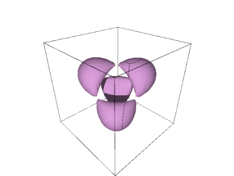